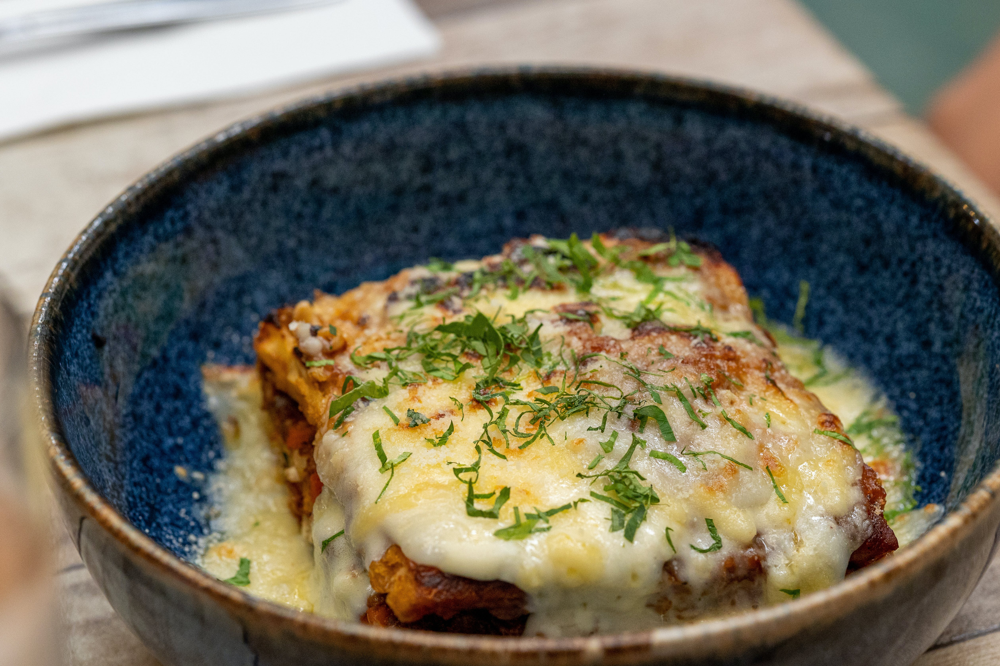

Lasaña Vegetariana de Verduras

Descripción
Una lasaña abundante y colorida que combina capas de láminas de lasaña con rodajas finas de calabacín, berenjena y pimientos rojos cocidos con cebolla y ajo. Se intercala con suaves capas de queso ricotta y mozzarella, todo coronado con una capa gratinada de queso parmesano rallado.
Ingredientes
- Láminas de lasaña
- 2 calabacines cortados en rodajas finas
- 1 berenjena cortada en rodajas finas
- 1 pimiento rojo cortado en tiras
- 1 cebolla picada
- 2 dientes de ajo picados
- 2 tazas de salsa de tomate
- 2 tazas de queso ricotta
- 2 tazas de queso mozzarella rallado
- 1 taza de queso parmesano rallado
- Aceite de oliva
- Sal, pimienta y hierbas al gusto (orégano, albahaca, etc.)
Pasos
- Precalienta el horno a 180°C (350°F).
- En una sartén grande, calienta un poco de aceite de oliva a fuego medio. Agrega la cebolla y el ajo, y cocina hasta que estén dorados.
- Agrega las rodajas de calabacín, berenjena y pimiento rojo a la sartén. Cocina hasta que las verduras estén tiernas. Condimenta con sal, pimienta y hierbas al gusto.
- En una bandeja para horno, coloca una capa delgada de salsa de tomate. Cubre con una capa de láminas de lasaña.
- Agrega una capa de las verduras cocidas, luego una capa de queso ricotta y queso mozzarella. Repite el proceso hasta llenar la bandeja o terminar con las láminas de lasaña.
- Espolvorea queso parmesano rallado sobre la última capa.
- Cubre la bandeja con papel de aluminio y hornea durante unos 30 minutos.
- Retira el papel de aluminio y hornea por otros 10-15 minutos hasta que el queso se dore.
- Deja reposar la lasaña antes de servir.